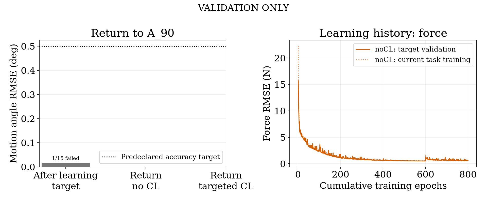
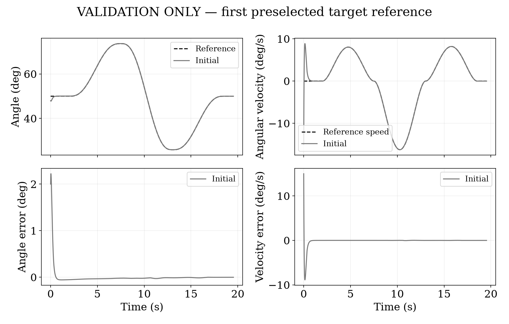
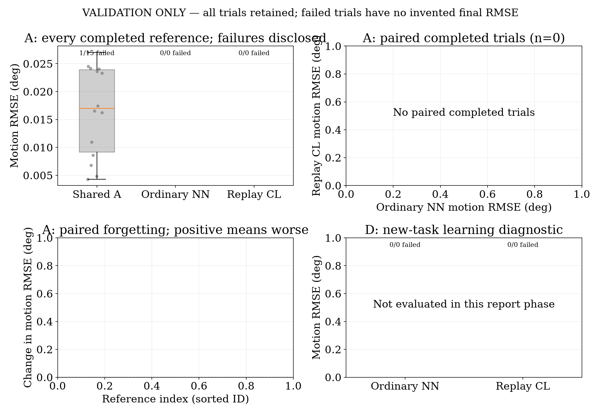

VALIDATION ONLY | seed 42 | state initial_quality_failed
The shared controller did not learn the return task accurately enough before adaptation. This is an initial learning or state coverage problem; no forgetting or CL-success claim is made. Tests were not opened.
| Task | Checkpoint | RMSE deg | Motion max deg | Full max deg | Speed RMSE deg/s | Failed/attempted | High accuracy |
|---|---|---|---|---|---|---|---|
| A_90 | initial_target | 0.017 | 0.065 | 65.752 | 0.013 | 1/15 | 14/15 |
Dt: current-task minibatch. MA: at most512 samples per update from the fixed1024-example Task A training buffer. fθ predicts normalized force; F is the teacher cable-force label in N. β∈{1,4,16} is selected using validation only. K≤128 and ε=0.05. The encoded directions vq,vv slightly decrease actual angle/velocity at fixed reference. The same corrective-response regularizer is used in both branches; only replay uses previous-task data. It encourages corrective feedback but is not a stability proof.
Does sequential fine-tuning forget the preselected task A_90, and does target-only replay preserve it? Train A_90 -> B_60 -> C_30 -> D_45; freeze the final weights; revisit A_90 without learning. Ordinary NN runs first. Each CL candidate restarts from the exact same shared target-at-learning checkpoint. The last new task is tested separately, so preserved old-task behavior is not confused with successful new-task learning.
The affine-dynamics plus PID teacher supplies desired cable tension. Muscle strength is changed through maximum isometric force, not by changing excitation. Entire reference episodes are assigned to train/validation/test before NN fitting; all rows and instantaneous recovery queries stay with their parent split. Four copied-state teacher queries every 0.2 s cover +/-2 deg position, +/-12 deg/s speed and +/-0.02 rad s integral offsets. Queries are not additional integrated trials. No pilots or test values are fitted. Startup state combinations may recur across splits; whole reference episodes remain separate. Row counts are correlated samples, not independent episodes. More rows alone do not prove adequate state coverage.
The feedforward MLP has 6081 parameters and one cable-force output. It is a learned feedback controller because measured state/error, bounded integral and previous tension are inputs; there is no recurrent hidden state and no separate PID, nominal or gain head. Shoulder elevation/yaw are prescribed. Simulation muscle states and known task parameters are available inputs; physical sensor deployment is not established by this study.
Initial fit: 600 ordinary-MSE epochs, Adam lr0.001 with cosine decay to 5%, batch2048. Then up to 200 recovery epochs, Adam lr0.0001, weighted force loss and corrective-response regularization. Milestones 50/100/200 are capped to the requested budget. The first checkpoint meeting every initial validation reference is shared by both branches. Later stages: 120 epochs/task, Adam0.001, optimizer reset, final fixed-budget checkpoint. Both branches see identical current-task rows/permutations and update counts. Training uses CUDA, with no CPU fallback in this release; data remain GPU-resident when memory permits. OpenSim physics and report/data preparation remain CPU operations. Collection runs independent headless CPU episodes in parallel.
During sequential learning, both branches minimize weighted MSE between raw force/650 and teacher force/650 plus 0.1 times a local corrective-response penalty. Trajectory weights:25 for first0.25 s,8 for remaining first1 s,1 otherwise; teacher-query weight6. The response penalty discourages force decreasing when actual angle or velocity decreases at fixed reference, using encoded finite differences of0.05 and minimum slope0.02 on up to128 training examples. This encourages corrective response but does not guarantee closed-loop stability. CL adds beta times the same objective on at most1024 target-training examples. Memory allocates startup slots round-robin across episode/query groups, then reserves remaining slots for time-span diversity. The total memory remains1024 examples even with more collected data. Up to512 old examples are replayed per update. Float32 features/target/weights occupy at most120 KiB, plus indices/IDs. No previous full parameter vector is used by the CL mechanism; full deployment checkpoints are still saved. This is replay, not EWC. Replay adds data access/computation, so budgets are matched in current-task rows/updates, not total examples or wall time.
Candidate replay weights are1,4,16. At every later stage, CL current-task validation force RMSE must be at most1.5 times the ordinary-NN reference, with a1 N floor. Among eligible candidates, prefer those meeting target angle criteria, then lower target validation tracking RMSE, then smaller beta. All candidates are reported. No hidden fallback is selected if all adaptation constraints fail. Models, memory and selection are sealed before held-out values are decoded; no test tuning, updates or return-task relearning occurs.
Primary target accuracy: motion angle RMSE at most 0.5 deg AND motion maximum absolute error at most 2 deg, on every selected reference. Initial recovery hold is excluded from motion criteria, but full-episode maximum is also shown. Velocity RMSE is in deg/s. Saturation is the percentage of motion samples whose requested force is clipped. Angle group means give equal weight to each completed reference. Teacher-forced force RMSE is pooled over saved teacher states/queries and is not a closed-loop angle metric. Failed runs retain failure counts/partial traces and receive no invented finite final RMSE.
The shared controller did not learn the return task accurately enough before adaptation. This is an initial learning or state coverage problem; no forgetting or CL-success claim is made. Tests were not opened.
Results from one seed do not establish statistical significance. Validation guided method selection; only the sealed held-out tests support the final reported comparison. The single reference overlay was chosen by episode ID, not by error; the aggregate figure includes every attempted reference with failures counted separately. Initial poor tracking, forgetting, new-task adaptation and numerical/storage failures are different issues. All data hashes, source, checkpoints, candidate scores, histories and logs are retained. Perfect tracking, a large baseline failure and CL superiority are not guaranteed.
| Task | Reference | Strength ratio | Initial reference angles (deg) |
|---|---|---|---|
| A_90 | Vertical reaches | [0.9] | [50.0, 60.0, 70.0, 80.0] |
| B_60 | Variable speeds and reversals | [0.6] | [50.0, 60.0, 70.0, 80.0] |
| C_30 | Cross-body sweep via prescribed yaw | [0.3] | [50.0, 60.0, 70.0, 80.0] |
| D_45 | Reach/hold with load pulses | [0.45] | [50.0, 60.0, 70.0, 80.0] |
| Setting | Value |
|---|---|
| Mass (kg) | [5.0] |
| Control sample interval (s) | [0.005] |
| Muscle excitation | [0.1] |
| Initial angle offsets (deg) | [-2.0, 0.0, 2.0] |
| Initial speeds (deg/s) | [-15.0, 0.0, 15.0] |
| Integrator accuracy | [1e-05] |
| NN training device | cuda:0 |
| GPU | NVIDIA RTX 2000 Ada Generation |
| Physics device | CPU OpenSim; no CUDA forward dynamics |
| Viewer | Headless by default; optional final test viewer |
| Task | Split | Episodes | Trajectory rows | Query rows |
|---|---|---|---|---|
| A_90 | train | 105 | 446921 | 44912 |
| A_90 | validation | 15 | 65116 | 6540 |
| A_90 | test | 30 | 126620 | 12720 |
| B_60 | train | 105 | 424659 | 42664 |
| B_60 | validation | 15 | 60153 | 6044 |
| B_60 | test | 30 | 123693 | 12424 |
| C_30 | train | 105 | 671780 | 67372 |
| C_30 | validation | 15 | 96955 | 9724 |
| C_30 | test | 30 | 192143 | 19272 |
| D_45 | train | 105 | 601876 | 60384 |
| D_45 | validation | 15 | 83617 | 8388 |
| D_45 | test | 30 | 172944 | 17348 |
| Layer | Size/output | Parameters |
|---|---|---|
| Input | 28 encoded simulator features | 0 |
| Hidden 1 | 64 tanh | 1856 |
| Hidden 2 | 64 tanh | 4160 |
| Output | 1 linear normalized force | 65 |
| Total | One cable tension, clipped to 0-650 N | 6081 |
| Index | Raw feature | Raw unit | Encoded value |
|---|---|---|---|
| 1 | angle_rad | rad | raw / 1 |
| 2 | velocity_rad_s | rad/s | raw / 2 |
| 3 | reference_rad | rad | (reference angle - actual angle) / 0.02 rad |
| 4 | reference_velocity_rad_s | rad/s | (reference speed - actual speed) / 0.2 rad/s |
| 5 | reference_acceleration_rad_s2 | rad/s2 | raw / 10 |
| 6 | mass_kg | kg | raw / 20 |
| 7 | shoulder_angle_rad | rad | raw / 1 |
| 8 | previous_tension_N | N | raw / 650 |
| 9 | error_integral_rad_s | rad s | raw / 0.1 |
| 10 | TRIlong_activation | dimensionless | raw / 1 |
| 11 | TRIlat_activation | dimensionless | raw / 1 |
| 12 | TRImed_activation | dimensionless | raw / 1 |
| 13 | BIClong_activation | dimensionless | raw / 1 |
| 14 | BICshort_activation | dimensionless | raw / 1 |
| 15 | BRA_activation | dimensionless | raw / 1 |
| 16 | TRIlong_normalized_fiber_length | dimensionless | raw / 1 |
| 17 | TRIlat_normalized_fiber_length | dimensionless | raw / 1 |
| 18 | TRImed_normalized_fiber_length | dimensionless | raw / 1 |
| 19 | BIClong_normalized_fiber_length | dimensionless | raw / 1 |
| 20 | BICshort_normalized_fiber_length | dimensionless | raw / 1 |
| 21 | BRA_normalized_fiber_length | dimensionless | raw / 1 |
| 22 | strength_scale | dimensionless | raw / 1 |
| 23 | shoulder_velocity_rad_s | rad/s | raw / 2 |
| 24 | shoulder_acceleration_rad_s2 | rad/s2 | raw / 10 |
| 25 | yaw_rad | rad | raw / 1.5 |
| 26 | yaw_velocity_rad_s | rad/s | raw / 2 |
| 27 | yaw_acceleration_rad_s2 | rad/s2 | raw / 10 |
| 28 | external_load_y_N | N | raw / 25 |
Training RMSE is the online, last-epoch minibatch aggregate before/after intervening updates. Validation is evaluated at the saved final checkpoint. Force units are N; they do not represent angle error.
| Branch | After task | Epochs | Train RMSE N | Current val RMSE N | Updates | Device |
|---|---|---|---|---|---|---|
| initial_base | A_90 | 600 | 0.512 | 0.530 | 144600 | cuda:0 |
| shared | A_90 | 200 | 0.601 | 0.605 | 48200 | cuda:0 |
Solid learning curves show return-task validation force RMSE; dotted curves show current-task training force RMSE. The current task changes between stages, so the dotted/solid gap is not a same-task generalization gap.




| Task | Model | Reference | Completed | Motion RMSE deg | Partial RMSE deg | Motion peak deg | Passed |
|---|---|---|---|---|---|---|---|
| A_90 | initial_target | A_90_A_e50_validation_00 | True | 0.02417611917082484 | None | 0.05284239011476429 | True |
| A_90 | initial_target | A_90_A_e50_validation_01 | True | 0.004843896522839448 | None | 0.013701340832930396 | True |
| A_90 | initial_target | A_90_A_e60_validation_00 | True | 0.023293335880660664 | None | 0.05285434048125088 | True |
| A_90 | initial_target | A_90_A_e60_validation_01 | True | 0.004312916783332046 | None | 0.012642066295444527 | True |
| A_90 | initial_target | A_90_A_e70_validation_00 | True | 0.017423616422163352 | None | 0.055023605773808694 | True |
| A_90 | initial_target | A_90_A_e70_validation_01 | True | 0.027026554329138936 | None | 0.06532214190405715 | True |
| A_90 | initial_target | A_90_A_e80_validation_00 | True | 0.006813297431485699 | None | 0.02092302364552547 | True |
| A_90 | initial_target | A_90_B_e50_validation_00 | True | 0.02454444792031222 | None | 0.060595572973473434 | True |
| A_90 | initial_target | A_90_B_e50_validation_01 | True | 0.024045710436618135 | None | 0.055456250641371975 | True |
| A_90 | initial_target | A_90_B_e60_validation_00 | True | 0.016244481740808336 | None | 0.03620281966903427 | True |
| A_90 | initial_target | A_90_B_e60_validation_01 | True | 0.010948506134980608 | None | 0.03440034973546386 | True |
| A_90 | initial_target | A_90_B_e70_validation_00 | False | None | None | None | False |
| A_90 | initial_target | A_90_B_e70_validation_01 | True | 0.023613341652070626 | None | 0.051991748272593445 | True |
| A_90 | initial_target | A_90_B_e80_validation_00 | True | 0.016537829089639775 | None | 0.03860153414108101 | True |
| A_90 | initial_target | A_90_B_e80_validation_01 | True | 0.008583629568907814 | None | 0.02536437304667346 | True |